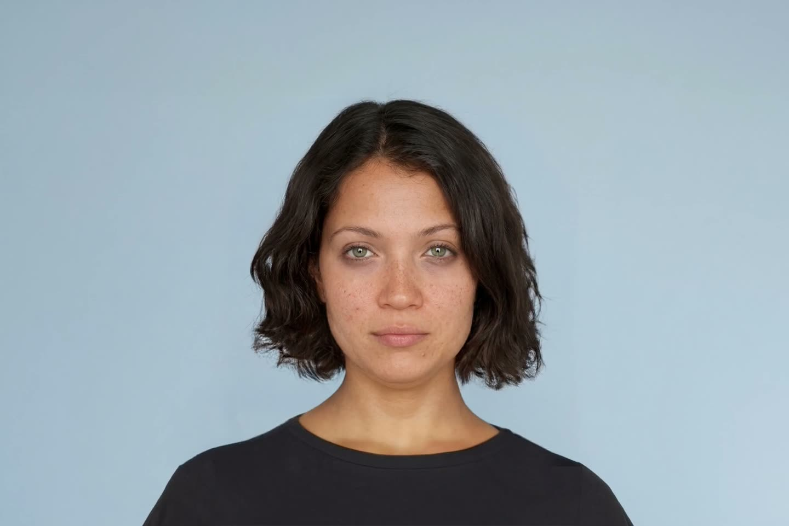
The science of your face and body. Without surgery.
Aurii gives you a private, doctor-informed read across your face and frame — skin, hair, grooming, photos, posture, proportions, body composition and fit. No public score, no shame spiral: just the highest-return changes ranked into a practical plan.
See your direction
One private scan reads your features and physique, then maps the changes that matter most — in order.
Private, evidence-led face & body planning
Your strongest visual levers, ranked.
Aurii reads your face and your physique together — skin, hair and grooming alongside posture, proportion and fit — then turns that read into a calm, prioritised plan. No scores, no judgement. Just clear direction on the changes that genuinely move how you present, and the confidence that follows.
- 1Feel genuinely confident in photos — knowing your angles, lighting and grooming work in your favour.
- 2Make a stronger first impression, with a face and frame that read as composed and intentional.
- 3Present better where it counts — dating profiles, professional headshots and everyday introductions.
- 4Get honest direction on posture, body composition and proportion, paced to your real life.
- 5Avoid unnecessary procedures by understanding what styling, fit and habits can do first.
Turn a reference video into your own visual protocol.
Aurii is designed to read more than still photos. Add a short style reference — a walk, pose sequence, camera angle, outfit cadence or editorial clip — and the system breaks it into key frames, notes the movement language, then adapts the style to your face, frame and proportions.
10–30 seconds of movement, posing, styling or camera direction.
Aurii studies entry, turn, pause, expression, posture and exit frames.
Angles, lens distance, hand tension, outfit structure and rhythm.
A practical adaptation plan — not imitation, a version that fits you.
- See which frames make the style work: chin line, shoulder set, camera height, stride and pause.
- Adapt a reference to your own face, body and proportions instead of copying someone else directly.
- Separate the signal from styling noise — lighting, lens, clothing structure, grooming and edit rhythm.
- Receive a ranked protocol with posture cues, outfit tests, photo/video angles and repeatable drills.
See exactly what to change first.
Aurii turns face and body signals into a private ranked protocol — what to do now, what to test, what to ignore, and when to ask a professional.
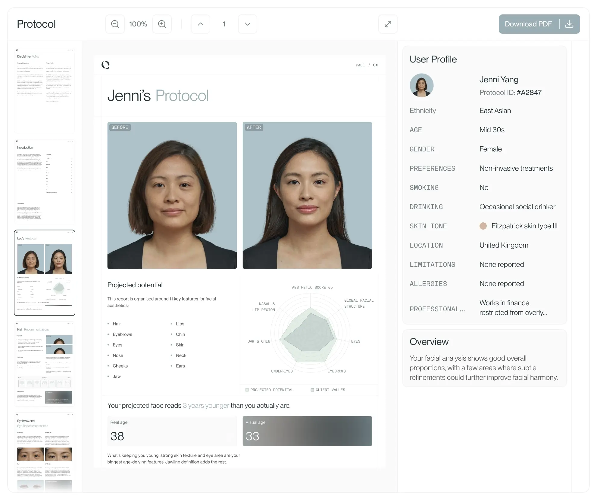
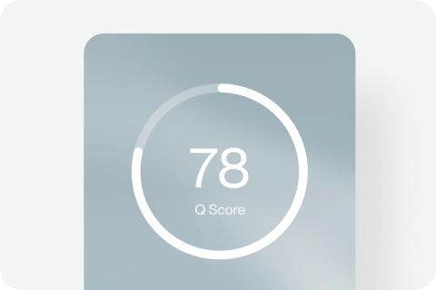
Biometrics + progress map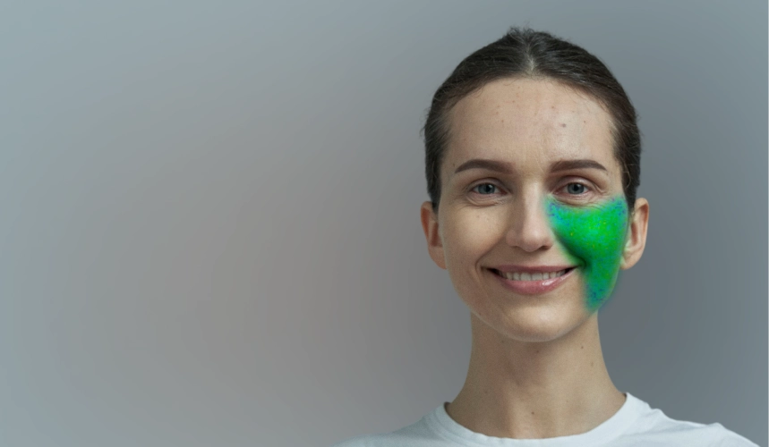
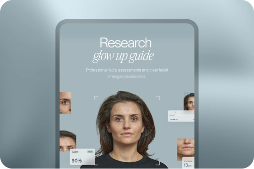
Owned Aurii preview assets are used here with original Aurii copy, a calmer visual hierarchy, and product-first sections built for a private beta.
Appearance shapes first impressions — but it is not destiny.
Decades of peer-reviewed research show that how we present — face and body alike — quietly shapes first impressions, opportunity and self-perception. Aurii turns that evidence into private, practical guidance. None of this is destiny, and none of it is medical advice.
Aurii summarises published findings on appearance for educational, non-clinical purposes only. For any skin, dental, hormonal or other health concern, consult a qualified professional.
How it works
Three steps to clarity.
A calm, private walkthrough — from the photos you upload to a ranked plan you can actually act on. Aurii reads both your face and your physique, then sequences what matters most.
Step 01
Upload face & body photos
Capture a few well-lit shots of your face and a full-body image in neutral clothing. Clear guidance helps you frame skin, hair and grooming alongside posture and overall proportion. Your photos stay private and encrypted.
Step 02
Aurii analysis
Aurii reads facial markers — skin texture, hair, symmetry and grooming — and assesses the body across composition, posture, proportion and how clothing fits. Every observation is evidence-led and free of any public attractiveness score.
Step 03
Personalised, ranked protocol
You receive a clear, ordered plan covering both face and body — what to prioritise first and why, from grooming and skincare habits to posture, training and styling. Anything clinical is flagged to consult a qualified professional.
Mapped for your face and your frame.
Aurii reads two complementary stories — the face above and the body below — then connects them. Every observation is private, non-medical, and framed as something you can act on, never a verdict. Where a topic crosses into skin, dental, or clinical territory, we point you to a qualified professional.
Facial landmarks
Proportion and symmetry across thirds and fifths, plus skin texture, tone evenness, and how your hairline and brows frame the face. Read as ranges, never a single public score.Body & posture
Overall frame and build, standing posture, shoulder line, and the proportion lines that run from neck to hip. A calm view of physique and carriage — not a weight verdict.Photo capture
Guided capture for both portraits and full-length shots: lens distance, lighting direction, and camera angle are checked so the face and the frame are measured fairly, not flattered or distorted.Styling & fit
Wardrobe cut and fit mapped to your frame and proportions, alongside grooming and hair notes for the face. Practical, reversible steps that flatter how you are actually built.160+ things we read — across face and body.
Aurii studies your appearance the way a thoughtful eye would, only more patiently. Across six dimensions spanning face and body, we map hundreds of small signals — texture, light, line, balance and fit — and translate them into clear, private observations. No scores, no judgement; just a considered reading of where small, realistic adjustments could help you look more like yourself on a good day.
Skin & complexion
How light sits on your skin — tone, texture, evenness and the everyday habits that keep it looking rested.
34 markersFacial proportion & symmetry
The quiet geometry of your features — spacing, thirds and balance — read as relationships, never as a verdict.
41 markersHair & framing
How shape, length and parting frame your face — and which directions tend to flatter your natural lines.
22 markersPosture & alignment
How you carry yourself in frame — head, shoulders and stance — and small shifts that read as ease and presence.
26 markersBody composition & proportion
General build and proportion across the frame — observed gently, to guide realistic, sustainable goals.
19 markersStyling & fit
How cut, colour and fit work with your proportions — practical notes for clothes that sit and suit you.
23 markersA new way to glow up.
Most appearance journeys start with a single fixation and a quick fix. Aurii starts with a calm, full-picture read of your face and your body — then maps a reversible, realistic path from where you are to where you could be.
The old way
The Aurii way
A plan that evolves with you.
Nothing here is one-and-done. We reassess every year, keep a private record of how things change over time, and always lead with the reversible, low-commitment moves first — so face and body progress feels considered, never rushed.
-
Day 1 — Capture & analysis
A few well-lit photos establish your starting point — facial features, skin and hair condition, posture and overall proportion — read calmly, with no scores.
-
Week 1 — Photo, grooming & posture reset
Quick wins first: angles and lighting that flatter you, a tidy grooming baseline, and simple stance and shoulder cues that lift how you carry yourself.
-
Month 1 — Hair, skin, styling & training
The build phase: a cut that suits your face, a steady skin routine, a wardrobe that fits your frame, and a movement plan to shape body composition over time.
-
Month 3 — Reassess & refine
We compare against Day 1, keep what is working for face and body, and gently adjust the rest — refining habits rather than starting from scratch.
-
Year 1 — Re-scan & track progress
A fresh capture set against your history shows a year of change across skin, hair, posture and proportion — and sets the focus for the year ahead.
The everyday factors behind how you look.
Appearance is rarely about one big thing. It is the quiet sum of how you rest, move, eat and care for yourself — read across your face and body. Aurii maps these inputs to the cues people actually notice, so you can see what is worth your attention. Observations only, never a diagnosis or a promise.
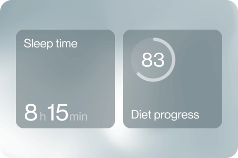
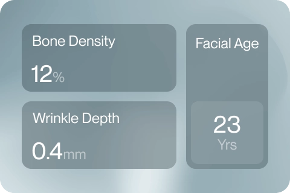
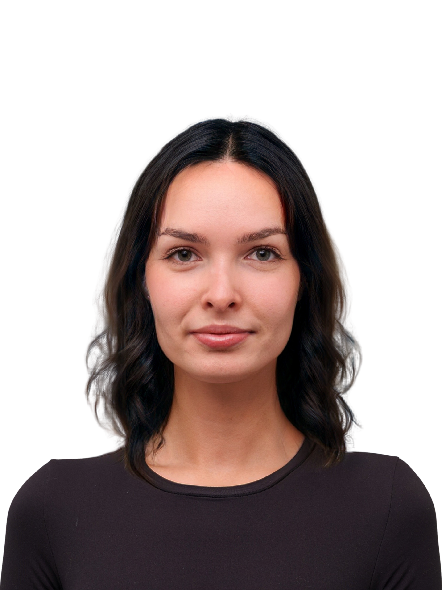
Sleep
Steadier rest tends to show as brighter under-eyes, less puffiness and an easier, more even complexion.
Skincare
A simple, consistent routine reads as smoother texture, calmer tone and a softer, more reflective surface.
Sunlight & UV
Mindful sun habits help keep tone even and texture fine, softening the look of premature lines and spots.
Hydration
Well-hydrated skin tends to look plumper and more supple, with a fresher cast across the face and lips.
Nutrition
Balanced, colourful eating often shows as healthier-looking skin tone and fuller, more resilient hair.
Training & posture
Regular movement and an open, upright stance read as better proportion, a defined jawline and confident lines.
Grooming
Tidy brows, hairline and edges frame the face cleanly, sharpening features without changing a thing about you.
Stress
Lower day-to-day tension tends to soften the brow and jaw, easing a clenched or tired look in the face.
Recommendations with medical boundaries.
Aurii can recommend, prioritise and sequence changes across your face and your physique — but it does not diagnose, prescribe, or stand in for a clinician. When a question touches your skin, teeth, general health or a training injury, Aurii pauses and prompts you to consult a qualified professional.
Advisory review layer
"The most reliable gains — for both face and body — usually come from reversible, evidence-informed habits: light, sleep, grooming, posture, fit and consistent movement. We surface those first, and only point toward clinical or cosmetic intervention once the simple, low-risk work has been given a fair chance."
General educational framing only. Aurii is non-medical and routes clinical questions to qualified professionals.Dermatology-aware
Skin, hair and grooming guidance stays within general, non-clinical routines. Anything resembling a condition, lesion or reaction is flagged to see a dermatologist or GP — never diagnosed.
Dental-aware
Smile, alignment and shade observations are cosmetic context only. For whitening, orthodontics or anything structural, Aurii directs you to a registered dentist or orthodontist.
Cosmetic safety
Where face or body goals might lead toward procedures, Aurii frames options neutrally, never guarantees outcomes, and recommends an accredited practitioner for consultation and consent.
Movement & training safety
Posture, proportion and body-composition advice favours gradual, sustainable training. Pain, suspected injury or rapid weight change prompts a referral to a physiotherapist, coach or doctor — with a note on mental wellbeing if pressure is building.
Your personalised Aurii protocol.
A single, calm document that maps your face and your physique into one prioritised plan. Skin, hair, grooming and capture sit alongside posture, proportion, body composition and fit — sorted by what actually moves the needle, and what to leave alone.
Aurii Full Plan
Executive summary
Your strongest gains are in controllables — lighting and camera distance for the face, and posture and frame for the body. We have flagged a few skin and grooming items as high-impact and worth testing, and noted one area to raise with a qualified professional. Nothing here is a diagnosis or a guarantee; it is a prioritised, evidence-led starting point.
Aurii Priority Matrix
Click each quadrant.
The fastest, lowest-risk wins. For your face: soften overhead lighting, shoot at eye level from roughly an arm and a half away, and keep grooming consistent. For your body: train posture, set your shoulders and pelvis neutral, and dress to your true proportions. Free, reversible, and visible within days.
Private progress, shown clearly.
Use the same split-view language throughout the page: baseline on the left, direction on the right, with copy focused on practical levers rather than public scores or guarantees.
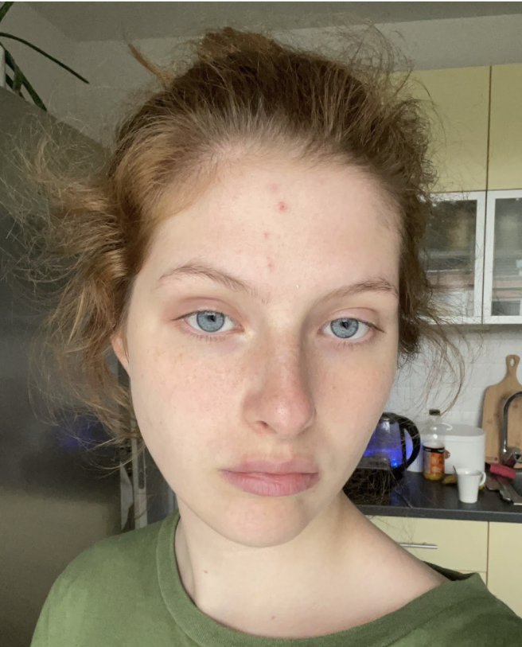
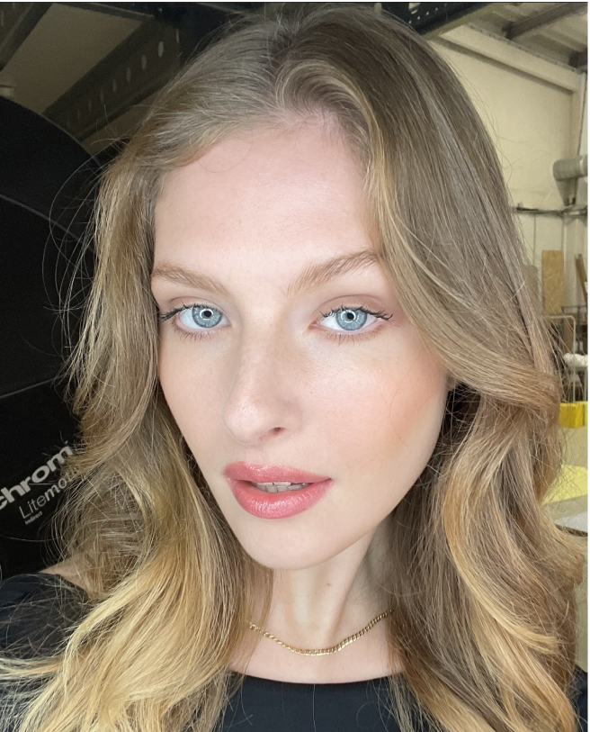
Lighting + skin clarity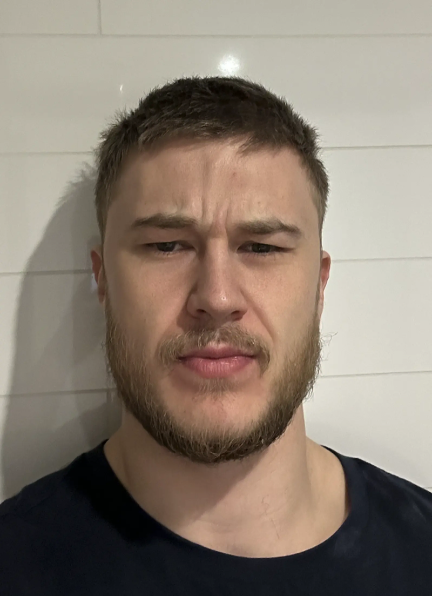
Grooming + framing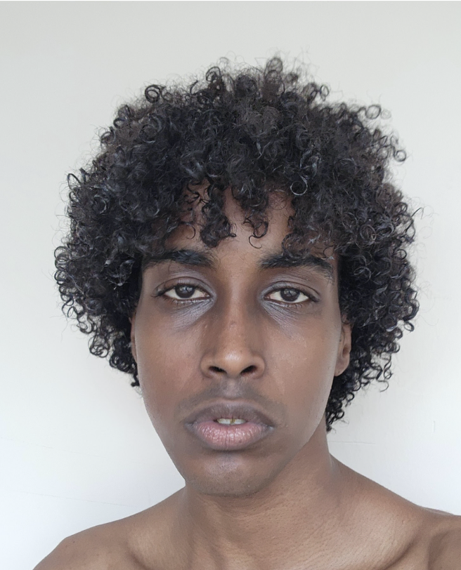
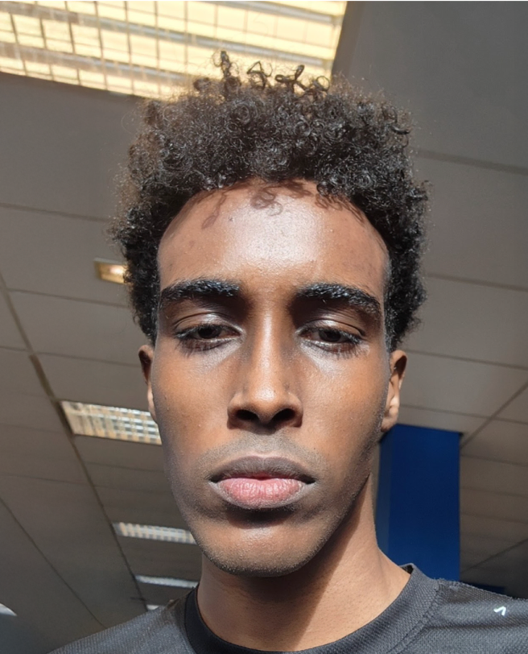
Posture + presentation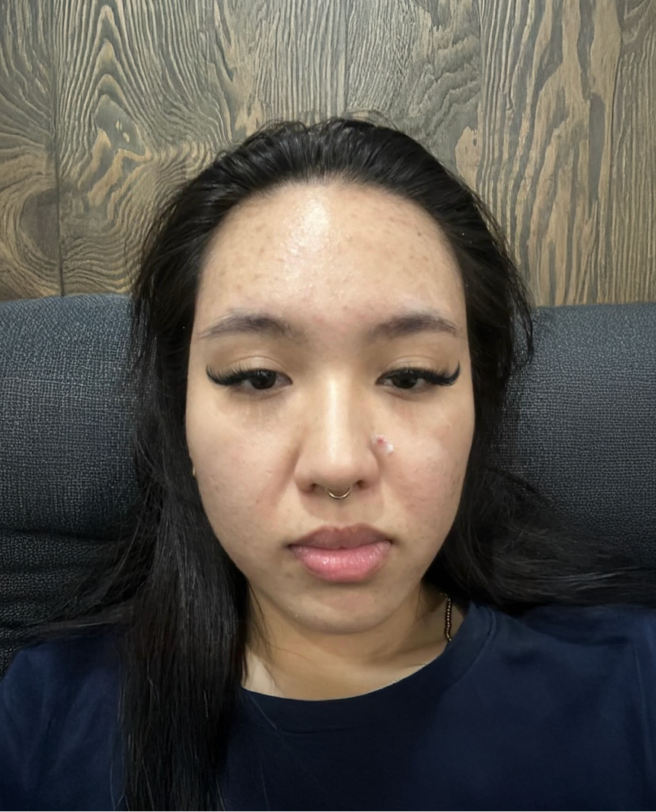
Photo capture directionVisual previews are for product demonstration only. Aurii is private, non-medical appearance intelligence — no diagnosis, prescription, attractiveness score, or guaranteed outcome.
Pricing
Choose your level of clarity.
Aurii is in private beta. The floor starts at a premium $300 so the work is positioned as serious private analysis, not a cheap checklist. Every tier reads the whole picture — face and body together — never a single score, never a verdict.
Snapshot
- A focused face and body read covering proportion, balance and first impressions
- Skin, hair and grooming notes for the face, plus posture and silhouette cues for the body
- Photo and capture direction so your face and full-body shots are read accurately
- Three clear, kind priorities to act on first
Full Aurii Plan
- Complete face and body report with detailed proportion, composition and styling analysis
- Physique direction — posture, training and body-composition emphasis — alongside skin, hair and grooming guidance
- Wardrobe, fit and styling recommendations that flatter your build, framing the face
- A sequenced plan with photo direction and progress check-ins over time
Concierge
- Everything in Full Aurii, revisited as your face and physique evolve
- One-to-one guidance pairing grooming, skin and hair with posture, fitness and proportion goals
- Tailored styling, fit and photo direction for both face and full-body presence
- Referrals to qualified professionals whenever a topic is clinical or medical
Clear, private, kind.
Honest answers about what Aurii is, what it looks at, and how your face and body data stay yours. Non-medical, non-judgemental, evidence-led.
No. Aurii is a private appearance-intelligence tool, not a medical service. We don't diagnose conditions, prescribe treatments, or replace a clinician. Everything we share — across both your face (skin, hair, grooming) and your body (posture, composition, proportion, fit) — is informational and framed to help you understand your options. Where a topic is genuinely clinical, dental, or dermatological, Aurii will say so and encourage you to consult a qualified professional.
No. There's no public attractiveness rating and no leaderboard. Aurii is built around your own goals, not a single number that ranks you against others. Instead of a verdict, you get a calm, structured read of specifics — what's working, what's adjustable, and where small changes tend to make the most difference, for your face and your physique alike.
Yes — fully. Aurii analyses both. For the face that means skin quality, hair and grooming, and how you capture yourself on camera. For the body that means posture, body composition, proportion and balance, and how fit and styling read on your frame. The two work together: most people see the biggest shift when face and body are considered as one picture rather than in isolation.
Non-surgical first, always. Aurii leads with the things within your control — grooming, skin care routines, training and posture, styling and fit, and how you present in photos. These cover the vast majority of what people want to improve, for face and body. If you ever want to explore a clinical or surgical route, that's a conversation for a qualified professional, not an automated recommendation from us.
Yes. Your face and body images are yours. They're encrypted, used only to generate your own analysis, and never sold, published, or shared without your explicit say-so. There's no public profile and no shared gallery. You can request deletion of your photos and data at any time, and we'll confirm when it's done.
The science, in the open.
We publish how Aurii thinks — the evidence behind every read on face and body, written plainly. No hype, no scores, no claims we can't support. Just the working we'd want to see ourselves.
What lighting really does to a skin read
Why soft, even light changes how texture and tone register — and how Aurii corrects for it before saying anything at all.
Posture, proportion and the photographs we trust
A look at how stance and framing shift perceived proportion, and the composition cues that make a full-body image readable.
Grooming as signal, not standard
Why we frame hair and grooming as choices that suit you, never a single ideal — and how that shapes the language Aurii uses.
Bring Aurii into your practice.
Structured face and body analysis to support your consultations — clear, organised observations across skin, hair, grooming, posture, proportion and styling that give you and your clients a shared starting point. Aurii is a non-diagnostic intelligence tool: it informs the conversation, it never replaces your professional judgement.
Know what to change first.
A private, doctor-informed plan for your face and your body — skin, hair, grooming and capture alongside posture, proportion, composition and fit. We turn vague insecurity into a calm, ordered list of what actually moves the needle, and what to leave alone. No score, no judgement, no diagnosis — just clear next steps you can start this week.